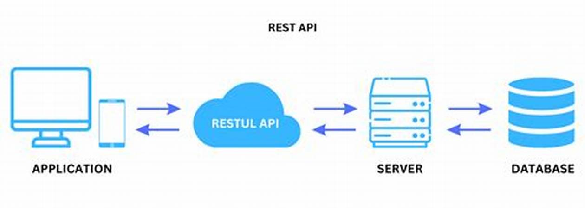

Una API, o interfaz de programación de aplicaciones es un conjunto de reglas que definen
la forma en que aplicaciones o dispositivos pueden conectarse y comunicarse entre sí.
Una API REST es una API que se ajusta a los principios de diseño de REST, o el estilo de
arquitectura de transferencia de estado representacional. Por esta razón, las API REST a
veces se denominan API RESTful.
Definido por primera vez en 2000 por el científico informático Dr. Roy Fielding en su tesis
doctoral, REST proporciona un nivel relativamente alto de flexibilidad y libertad para los
desarrolladores. Esta flexibilidad es solo una de las razones por las que las API REST han
surgido como un método común para conectar componentes y aplicaciones en una
arquitectura de microservicios.
| Principio | Descripción |
|---|---|
| Interfaz uniforme | Todas las solicitudes para el mismo recurso deben tener el mismo formato, garantizando que los datos tengan un identificador uniforme (URI). Los recursos deben ser pequeños pero contener toda la información necesaria. |
| Desacoplamiento cliente-servidor | El cliente y el servidor deben ser completamente independientes. El cliente solo necesita conocer el URI del recurso, y el servidor no debe modificar el cliente, solo proporcionarle los datos. |
| Sin estado | Cada solicitud debe contener toda la información necesaria para procesarla. El servidor no debe almacenar información de sesión del cliente. |
| Capacidad de caché | Los recursos deben poder almacenarse en caché para mejorar el rendimiento y la escalabilidad. Las respuestas deben indicar si se permite el almacenamiento en caché. |
| Arquitectura en capas | Las llamadas y respuestas pueden pasar por múltiples capas. Cliente y servidor no deben asumir que están conectados directamente. |
| Código bajo demanda (opcional) | Aunque las API REST suelen enviar recursos estáticos, pueden incluir código ejecutable bajo demanda, como subprogramas de Java. |
Aunque la flexibilidad es una gran ventaja del diseño de API REST, esta misma flexibilidad
puede llevar a crear una API que no funcione correctamente o tenga un rendimiento
deficiente. Por esta razón, los desarrolladores profesionales comparten las mejores
prácticas en las especificaciones de la API REST.
La Especificación OpenAPI (OAS) proporciona una interfaz para describir una API de
manera que cualquier desarrollador o aplicación pueda descubrir y comprender completamente
sus parámetros y funcionalidades: puntos finales disponibles, operaciones permitidas en
cada punto final, parámetros de operación, métodos de autenticación y más. La última versión,
OAS3, incluye herramientas como OpenAPI Generator para generar apéndices de clientes y servidores
en distintos lenguajes de programación.
La protección de una API REST comienza con las mejores prácticas de seguridad, como el uso de algoritmos
hash para proteger contraseñas y HTTPS para la transmisión segura de datos. Un marco de autorización
como OAuth 2.0 puede ayudar a limitar los privilegios de las aplicaciones de terceros. Además, utilizando
una indicación de fecha y hora en los encabezados HTTP, una API puede rechazar solicitudes que lleguen
después de un determinado período de tiempo. La validación de parámetros y el uso de JSON Web Token
(JWT) también son prácticas comunes para asegurar que solo los clientes autorizados puedan acceder a
la API.
REST utiliza los métodos estándar de HTTP para realizar las operaciones en los recursos. Los principales métodos son:
REST es un estilo arquitectónico que ha ganado mucha popularidad en el desarrollo de servicios web debido a su simplicidad, flexibilidad y eficiencia. Si estás trabajando en la creación de una API, REST es una excelente opción a considerar por sus numerosas ventajas y su amplia adopción en la industria.
